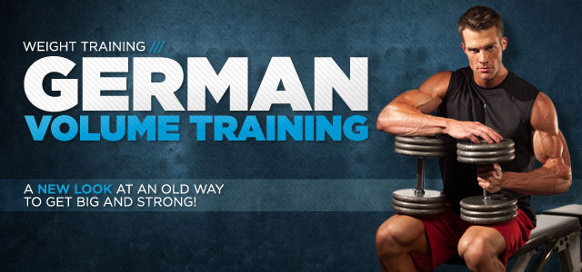

Train insane like the one and only 7 time Mr. Olympia Arnold Schwarzenegger. Arnold's muscle building workouts feature an intense high volume and frequency approach to training.
100 Burpees Workout Challenge
Note: All information provided by Fitness Blender is of a general nature and is furnished only for educational/entertainment purposes only. No information is to be taken as medical or other health advice pertaining to any individual specific health or medical condition. You agree that use of this information is at your own risk and hold Fitness Blender harmless from any and all losses, liabilities, injuries or damages resulting from any and all claims.
225lbs for 210 reps: Mike Rashid ft. CT Fletcher
225lbs for 210 reps: Mike Rashid ft. CT Fletcher
Big Booty Building Home Workout!
Bikini Model Viktoria Kay (@Viktoria_Kay) is showing you a great home workout to build and lift your butt using just squats and hip thrusts. Hip Thrust isolate the Butt muscles while squats workout your legs and butt. Give this workout a try.
Big BUTT Squat Workout Challange!!
Bikini Model Diana Levy does her Squat Sponge (SquatSponge.com) workout challenge in the gym. She's doing some of her fav barbell exercises to build up her butt and legs
Leg and Booty Gains Workout
This video is for leg/booty gains. My booty workout video will be back up soon. I had to take it down because of a copywriter
The TITAN vs SUPERMAN !
Watch this EPIC battle against the SUPERMAN from COMPTON and The TITAN, Mike O'Hearn, go neck to neck in a monster workout of ARMS at the Original Iron Addicts Gym , located in Long Beach,CA. Who dares to enter the valley of the BEAST?!
I'm The One ft. CT Fletcher
Female squats non-stop!
Johnnie O. Jackson’s ULTIMATE DELT DAY
Johnnie O. Jackson has some of the best shoulders in the business, and in ULTIMATE DELT DAY he’s 2 weeks out from his 12th Mr. Olympia appearance. In this video shot in stunning 4K cinema-quality you’ll see every detail, every fiber, and every cut. National Geographic meets bodybuilding in our highest-quality training content yet!
10 Min Abs Workout - Abdominal and Oblique Exercises
At Home Abdominal and Oblique Exercises
MY GYM ROUTINE | 6 PACK ABS WORKOUT
My Gym Routine for gorgeous 6 Pack Abs in time for Summer! You guys have been asking me to film this for SO long and as I recently changed and improved my routine I wanted to share with you my Ab workout which has NO Ab crunches!

German Volume Training(GVT)
Do your select exercises as you normally.Your sets and reps will be 10 sets of 10-reps. every minute on the minute